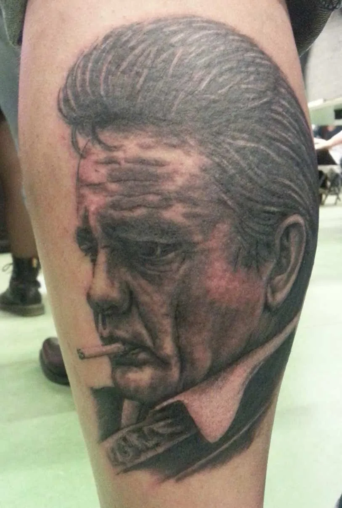

Tattoos
Van eerste klein ontwerp tot volledige sleeve
Freehand, naar een foto of samen uitgetekend. Ook een oude tattoo omvormen tot iets nieuws kan, met een cover-up.
FotografischFull colourBlack 'n greyJapaneseFreehandSleevesCover-up